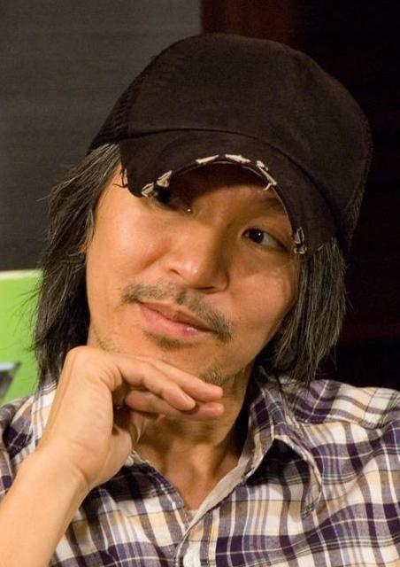
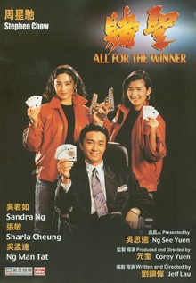
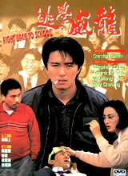
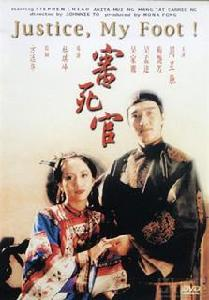
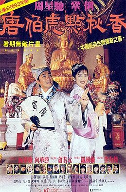
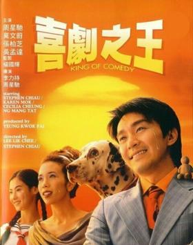
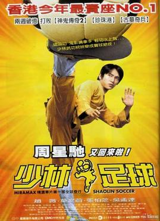
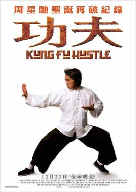
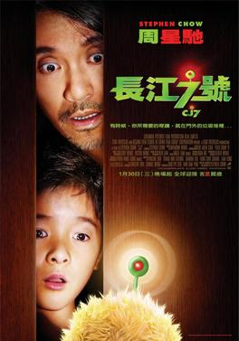
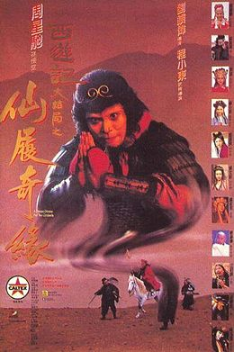

一部人物档案，附二十一条网络流言的逐条核查——从「主演49部致敬1949」查起。

触发本次研究的那类短视频（「星爷把爱国密码藏在电影里三十年」），是一份真细节配假意图的拼盘：画面细节多半经得起查——「甲申」二字、《帝女花》唱段、「忠党爱国」台词、中山装唱《我是中国人》都确有其事；但把这些归结为「周星驰一个人埋的密码」，几乎全无一手证据。多数设计出自杜琪峰、王晶、编剧或戏曲原型，而且至少两处（「后庭花」「忠党爱国」）的原始语境与「爱国解读」方向正好相反。
最硬的一条反证：整套叙事的支点——1997年那句「我对中国政府有信心」——查无当年任何出处，所有版本都来自2019年之后的自媒体。而1997年7月可查的真实报道，是他接受专访剖白申请移民加拿大两度被拒、官司一直打到2001年败诉。「人人找后路、唯独他不找」的故事，主角本人恰恰在找。
「好莱坞三请三拒」三条全部与英文行业媒体的当年记录相反或不符；「49部致敬1949」则是双重编造。这批视频在2026年5—7月集中爆发，与他执导的《功夫女足》（7月11日上映）档期高度重合，传播动机并不神秘。
剥掉包装，真实的周星驰依然可观：8次香港年度票房冠军、两破内地影史纪录、金像金马双料、《时代》周刊封面。研究他，不需要编造。
逐部核对四个来源后，任何口径都数不出49：
| 统计口径 | 数量 | 说明 |
|---|---|---|
| 全部出镜电影（含配角、客串） | 54 部 | 1988《捕风汉子》—2017《西游伏妖篇》片尾彩蛋；另有 2 部纯配音未计 |
| 担任男主角（含双男主） | 45 部 | 剔除 5 部配角、4 部客串 |
| 严格主演（再剔除边界争议） | 43 部 | 再剔除《最佳女婿》《千王之王2000》两个边界案例 |
「49」的实际来源是营销号凑数梗：2019年前后有文章按上映顺序把《喜剧之王》（1999）排为「第49部」，此后「主演49部」在B站、百家号之间互相转述成了「常识」。至于「致敬1949」——连营销号自己都没这么说过。中英文精确检索，找不到任何一条把 49 和 1949 挂钩的信源，周星驰本人更无此表述。何况片数是几十年市场博弈的结果，演员无法预先控制，「用从影片数致敬」这个设定本身就不成立。
1990年一年出镜11部为生涯峰值；2008年《长江7号》后不再主演，2017年仅在《西游伏妖篇》片尾客串一场。逐部明细见「柒 · 完整片单」。
甲 ｜ 数字与排片
49这个数字是致敬新中国成立的1949年不实
纯属编造的二次附会——中英文精确检索，没有任何信源（包括营销号自己）把49和1949挂钩，周星驰本人从未有此表述。片数是市场结果，演员无法预先控制，「用片数致敬」在逻辑上也不成立。
央视六公主一个多月的黄金时段全是他的片子连着放半真半假
2026年6月底至7月，电影频道确有密集连播（可查到的说法是「黄金档连播十天」），但「一个多月」无节目单佐证。背景毫不神秘：他执导的《功夫女足》7月11日上映（3天破6亿），连播是常规的档期造势，谈不上「还他公道」的暗示。
乙 ｜ 影片细节
《审死官》梅艳芳脸上印着「甲申」二字，暗指1644甲申国难；一共打了八下半真半假
字是真的：有网友逐帧截图确认脸上印的确是「甲申」，令签上只有天干「甲乙丙」、脸上却多出地支「申」，确实像有意为之。但「打八下」不实——逐帧核查是十下，「1644＋8」纯属数字附会。且即便隐喻成立，这部片的导演是杜琪峰、编剧是邵丽琼，周星驰只是主演，功劳簿记错了人。
《百变星君》用一场中国历史考试讽刺殖民教育，选项里还有「香港」半真半假
考试机器桥段存在，「明太祖是谁」的搞笑选项是「朱茵」「猪头皮」——前者是他当时的女友兼搭档，后者是台湾歌手，全是九十年代艺人谐音梗；「香港」选项查无实据。这场戏公认讽刺的是填鸭式考试文化，「殖民教育」是强行升华。
《鹿鼎记》韦小宝的虎头帽参照反清复明的藤牌营查无依据
帽子真、藤牌营史实真（金庸原著里韦小宝确实向林兴珠学过藤牌战法），但「造型参照藤牌营」只是2022年影迷文章的联想，无任何剧组证据。更要命的是：历史上的藤牌营是效力清廷、替康熙打雅克萨的部队，拿它当「反清复明密码」自相矛盾。通行解读就是小孩帽子戴在成人头上的滑稽反差。
片中有人对着满清的公主唱亡国戏《帝女花》基本属实
确有其事，出自续集《鹿鼎记2神龙教》片尾：韦小宝对建宁公主唱《帝女花·香夭》「落花满天蔽月光」，建宁还赞「真有诗意」。《帝女花》写明末长平公主殉国，对清朝公主唱确有反讽味——这个解读2012年豆瓣影评就有，不是短视频的新发现。但《帝女花》是粤语区最烂熟的唱段，港片引用成癖，算不算「密码」见仁见智。
《唐伯虎点秋香》背景牌子「十不准」里藏着「不准唱后庭花」的亡国之痛半真半假
牌子真实存在，「不准唱后庭花」确在其中。但整块牌子公认是一串粤语荤段子——「磨豆腐」「打纸鸢」「走后门」「偷鸡」在粤语俗语里全有性暗示，「后庭花」在此语境同样是黄段子。把其中一条单拎出来解成家国隐喻，与整块牌子的语境完全不符。
丙 ｜ 生平言行
1997年他对着镜头说：我对中国政府有信心查无依据
找不到当年任何报道或视频，所有流传版本都出自2019年之后的自媒体，无一注明媒体和场合。当年可查的真实报道方向恰恰相反：1997年7月加拿大《明报》专访的主题，是他申请移民加拿大两度被拒（移民局怀疑其黑帮关联）、上诉至2001年终审败诉。容易混淆的真语录是2022年回归25周年央视专访：「我永远都是中国人。」
1988年TVB台庆，全场西装革履，只有他穿白色中山装唱《我是中国人》基本属实
视频真实且流传很早（2007年已有博客记载），1988年、白色中山装、唱《我是中国人》（刘家昌词曲、张明敏唱红）都对。但场合的早期口径是综艺《欢乐今宵》而非台庆，且这是节目编排的表演环节——另有他与林正英同唱此歌的片段。「满场西装唯他中山装」的对比场面是后加的戏剧化演绎。
丁 ｜ 好莱坞与慈善
《食神》火遍全球，好莱坞要买翻拍权但要把中国菜换成西餐，他说免谈不实
方向说反了。当年报道显示是周星驰一方主动推进美版翻拍：1998年《星岛日报》报道他计划为英语市场翻拍《食神》，金·凯瑞主演、福斯买下版权、好莱坞编剧改写英文剧本——项目最后自然流产，是好莱坞常见的开发夭折。「要么保留中国元素要么免谈」查无出处。
好莱坞请他导真人版《七龙珠》，他写了一整本剧本要保东方功夫内核，对方只给3000万，他退了不实
说反了。他婉拒的只是导演职位（自述只导自己原创的故事），但接受了制片人职位——《七龙珠：全新进化》（2009）片头字幕里就有他的名字，通过其星辉海外公司挂名。这部片是影史著名烂片。「写整本剧本」「只给3000万」查无任何报道，「3000万」疑似挪用了该片的实际预算数字。
梁朝伟结婚他包8000块红包，被拿来说事骂抠门查无依据
2008年不丹婚礼属实，但「8000红包」及他那句潇洒「回应」只能追溯到2022年前后的内地自媒体文章——无时间、无场合、无提问媒体；检索2008年前后港媒无对应报道。更像为「不在乎虚礼」人设量身编排的对照故事。
6月22日生于九龙贫民区，父周驿尚（宁波人）、母凌宝儿（广东宝安人）；七岁时父母离异，母亲独力抚养姐弟三人。
约九岁时看李小龙《唐山大兄》，立志做武打明星。
与好友梁朝伟同考TVB艺员训练班：梁被正规班录取，他落榜，经戚美珍说情才进夜训班（另一说为1981年）。
起主持儿童节目《430穿梭机》约五年——流传的「六年」偏高。
签约李修贤，凭《霹雳先锋》获第25届金马奖最佳男配角，正式转型。
《赌圣》以4132万港元成为香港影史首部破四千万的电影，一跃为一线巨星；这一年他出镜11部，为生涯峰值。
「周星驰年」：当年香港票房前五全是他的电影，《审死官》4988万再破影史纪录。
《唐伯虎点秋香》完成年度冠军四连庄。
《国产凌凌漆》与李力持联合执导，为导演处女作。
脱离永盛，成立星辉公司；主演《食神》。
《喜剧之王》再夺年冠；《大话西游》正经由盗版VCD在内地高校封神。
自编自导自演《少林足球》，6074万破港产片纪录；次年横扫金像奖七项大奖。
《功夫》6128万再创港产片纪录（保持七年），获金马最佳剧情片、最佳导演等五奖，全球票房约1.05亿美元。
《长江7号》夺年冠——此后不再主演电影。
转入纯导演阶段：《西游·降魔篇》12.46亿元居内地年度冠军。
《新喜剧之王》6.24亿元，口碑票房均不及预期。
出品首部微短剧《金猪玉叶》；任《喜剧之王单口季》发起人。其「御用配音」石班瑜9月去世。
| 年份 | 奖项 | 作品 | 结果 |
|---|---|---|---|
| 1988 | 第25届金马奖 · 最佳男配角 | 霹雳先锋 | 获奖 |
| 2002 | 第21届香港电影金像奖 | 少林足球 | 七项大奖：最佳电影、最佳导演、最佳男主角、杰出青年导演等——个人一届独揽三奖 |
| 2005 | 第24届香港电影金像奖 | 功夫 | 六项大奖，含最佳电影 |
| 2005 | 第42届金马奖 | 功夫 | 五项大奖：最佳剧情片、最佳导演等 |
| 2006 | 金球奖 · 最佳外语片 | 功夫 | 提名（另获英国电影学院奖最佳非英语片提名） |








《赌圣》4132万 → 《逃学威龙》4382万 → 《审死官》4988万 → 《少林足球》6074万 → 《功夫》6128万（保持七年）。导演作品另两破内地影史纪录：《西游·降魔篇》12.46亿、《美人鱼》33.9亿。
2003年登上美国《时代》周刊封面，入选「29位亚洲英雄」，评语大意为：中国若有查理·卓别林，那就是周星驰。《功夫》入选《时代》2005年全球十佳电影。
跑龙套时期人称「星仔」；1990年《赌圣》里吴君如一句「星爷」的台词埋下伏笔，影片爆红后称呼不胫而走，另有洪金宝等前辈带头改口的圈内轶闻（属回忆性材料）。从「仔」到「爷」，是香港影坛对地位的认证。
源于佛山一带粤语俚语，意为「没来由、无逻辑」。作为表演形态经他1989年剧集《盖世豪侠》引爆，九十年代随其电影发展为香港次文化的代表——解构权威、草根戏谑，影响整个华语圈。

1995年上映时香港平淡、内地惨败，一度被视为「文化垃圾」；1996年起经北电、清华水木BBS用后现代话语重新解读，配合盗版VCD在大学宿舍反复流传，台词成为一代人的接头暗号，最终封神——他的电影在内地的影响力，最初正是靠盗版碟与大学生完成的。台湾配音员石班瑜自1990年《赌侠》起为他配国语共28部，夸张的笑声塑造了内地观众心中的「周星驰声音」；粤语区观众则更认原声冷面的一派。两个版本各成审美，常被对照讨论。石班瑜2024年9月去世。
| 年份 | 片名 | 角色 | 戏份 | 导演 | 备注 |
|---|---|---|---|---|---|
| 1988 | 捕风汉子 | 阿星 | 配角 | 赖建国 | 首部电影 |
| 1988 | 霹雳先锋 | 阿Boy | 配角 | 黄柏文 | 金马奖最佳男配角 |
| 1988 | 最佳女婿 | 赖布甸 | 主演 | 黄华麒 | 三男主群戏（边界案例） |
| 1989 | 龙在天涯 | 阿友 | 配角 | 邓衍成 | 李连杰主演 |
| 1989 | 义胆群英 | 小奇 | 配角 | 吴宇森、午马 | |
| 1989 | 流氓差婆 | 贤仔 | 主演 | 刘镇伟 | 与吴君如对手主演 |
| 1990 | 望夫成龙 | 石金水 | 主演 | 梁家树 | |
| 1990 | 一本漫画闯天涯 | 阿星 | 主演 | 梁家仁 | 无厘头电影化开端 |
| 1990 | 龙凤茶楼 | 垃圾驰 | 主演 | 潘文杰 | |
| 1990 | 风雨同路 | 张郎 | 主演 | 黄柏文 | |
| 1990 | 咖喱辣椒 | 招文强 | 主演 | 柯受良 | 与张学友双主 |
| 1990 | 小偷阿星 | 阿星 | 主演 | 楚原 | |
| 1990 | 师兄撞鬼 | 周星 | 主演 | 刘仕裕 | |
| 1990 | 赌圣 | 左颂星 | 主演 | 刘镇伟、元奎 | ★ 4132万首破香港影史纪录 |
| 1990 | 无敌幸运星 | 幸运星 | 主演 | 陈友 | |
| 1990 | 江湖最后一个大佬 | 阿星 | 配角 | 沈威 | |
| 1990 | 赌侠 | 周星祖 | 主演 | 王晶 | 与刘德华双主 |
| 1991 | 整蛊专家 | 古晶 | 主演 | 王晶 | 与刘德华双主 |
| 1991 | 龙的传人 | 周小龙 | 主演 | 李修贤 | |
| 1991 | 新精武门1991 | 刘晶 | 主演 | 左颂升 | |
| 1991 | 逃学威龙 | 周星星 | 主演 | 陈嘉上 | ★ 4382万再破影史纪录 |
| 1991 | 赌侠2之上海滩赌圣 | 周星祖 | 主演 | 王晶 | |
| 1991 | 情圣 | 程胜 | 主演 | 李力持 | |
| 1991 | 赌圣延续篇：赌霸 | 左颂星 | 客串 | 刘镇伟、元奎 | |
| 1991 | 豪门夜宴 | 星爷（本人） | 客串 | 徐克等 | 群星慈善片 |
| 1992 | 漫画威龙 | 刘晶 | 主演 | 左颂升 | |
| 1992 | 家有喜事 | 常欢 | 主演 | 高志森 | 群戏三兄弟之一 |
| 1992 | 逃学威龙2 | 周星星 | 主演 | 陈嘉上 | |
| 1992 | 审死官 | 宋世杰 | 主演 | 杜琪峰 | ★ 4988万再破影史纪录 |
| 1992 | 鹿鼎记 | 韦小宝 | 主演 | 王晶 | |
| 1992 | 鹿鼎记2神龙教 | 韦小宝 | 主演 | 王晶 | |
| 1992 | 武状元苏乞儿 | 苏察哈尔灿 | 主演 | 陈嘉上 | |
| 1993 | 逃学威龙3之龙过鸡年 | 周星星 | 主演 | 王晶 | |
| 1993 | 唐伯虎点秋香 | 唐伯虎／华安 | 主演 | 李力持 | ★ 年冠四连庄 |
| 1993 | 济公 | 济颠 | 主演 | 杜琪峰 | |
| 1994 | 破坏之王 | 何金银 | 主演 | 李力持 | |
| 1994 | 九品芝麻官 | 包龙星 | 主演 | 王晶 | |
| 1994 | 国产凌凌漆 | 凌凌漆 | 主演 | 周星驰、李力持 | 导演处女作 |
| 1995 | 大话西游之月光宝盒 | 至尊宝 | 主演 | 刘镇伟 | 上映遇冷、后经VCD封神 |
| 1995 | 大话西游之仙履奇缘 | 至尊宝／孙悟空 | 主演 | 刘镇伟 | |
| 1995 | 回魂夜 | Leon | 主演 | 刘镇伟 | |
| 1995 | 百变星君 | 李泽星 | 主演 | 王晶 | |
| 1996 | 大内密探零零发 | 零零发 | 主演 | 周星驰、谷德昭 | |
| 1996 | 食神 | 史提芬周 | 主演 | 周星驰、李力持 | 星辉公司创业作 |
| 1997 | 97家有喜事 | 老恭 | 主演 | 张坚庭 | |
| 1997 | 算死草 | 陈梦吉 | 主演 | 马伟豪 | |
| 1998 | 行运一条龙 | 何金水 | 主演 | 李力持 | |
| 1999 | 喜剧之王 | 尹天仇 | 主演 | 周星驰、李力持 | ★ |
| 1999 | 玻璃樽 | 警员 | 客串 | 谷德昭 | 成龙主演 |
| 1999 | 千王之王2000 | 黄师虎 | 主演 | 王晶 | 挂头牌、戏份偏少（边界案例） |
| 2001 | 少林足球 | 阿星 | 主演 | 周星驰 | ★ 6074万破港产片纪录；金像七奖 |
| 2004 | 功夫 | 阿星 | 主演 | 周星驰 | ★ 6128万再破纪录；金马五奖 |
| 2008 | 长江7号 | 周铁 | 主演 | 周星驰 | ★ 最后一次主演 |
| 2017 | 西游伏妖篇 | 影院清洁工 | 客串 | 徐克 | 片尾彩蛋，九年后首次出镜 |
另有纯声音出演2部未计入：《非洲和尚》（1991，旁白）、《茅趸王》粤语版（2000，配音）。《建国大业》客串系2009年谣传（实为求客串被拒）；《功夫女足》片尾「背影客串」暂无权威信源，均不计入。